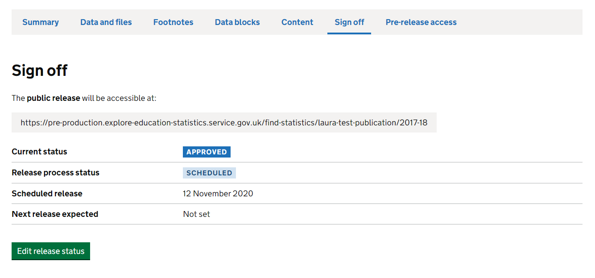

Guidance for how to publish Official and National Statistics
Explore Education Statistics (EES) is the Department’s new dissemination platform, designed to make DFE’s published statistics and data easier to find, access, use and understand.
The platform moved into Public Beta in March 2020 and over the next year will operate in parallel with existing statistics pages on gov.uk as publications are moved to the new platform.
More information on why EES was introduced and the functionality within the platform can be found in these slides.
The following table outlines the key differences between publishing via EES and the old method via gov.uk:
| Previous service: Statistics collections on gov.uk | New service: Explore Education Statistics |
|---|---|
| Statisticians request pdf and excel files are uploaded to release pages on gov.uk | Statisticians load csv data files on to the service and use them to build release pages |
| Release attachments are reviewed and approved via emails | Releases are reviewed and approved within the service |
| Release attachments are circulated for pre-release via email 24hours prior to publication date | Pre-release users are invited to preview releases within the service 24 hours prior to publication date |
If you are unsure which route to use for publication please contact the HoP Office.
Before releasing statistics for the first time you may want to discuss the new process with key stakeholders and/or pre-release users to make them aware of the new service. You should also inform the Explore Statistics Mailbox and HoP Office teams.
Before you start creating a release in the platform you should have:
Before you publish a release you have created in the platform you should have:
Word templates for the external metadata, pra-list, and content can be found on sharepoint.
You will need to arrange a GOV.UK statistics publication page so that it links to EES. Here is how to do that:
Two days ahead of publication, you’ll need to raise a ticket with the Digital communications (GOV.UK) team and ask them to create a new GOV.UK statistics page with a link to EES, connect it to the announcement and add to any collections.
In your request, you’ll need to include:
title, summary sentence and ‘detail’ for the new page – you can include a link to previous releases if you want it to be the same
the link for your EES release – if you don’t have it you can update the ticket when the link is available
the link for the announcement
the link of any GOV.UK collections it needs to be added to
an email with clearance from your deputy director
an email confirming communications are happy for it to go if it’s for stats that aren’t pre-announced or it’s an update to stats made after publication – so that they can prepare reactive lines
Here are examples of how the page will look like:
You can find what the link to your EES release will be by looking at the ‘Sign off’ page within the release dashboard on EES.

Text to update the collection page:
In addition, you will also need to raise a ticket with the Digital communications (GOV.UK) team to update your collection page/s with the following text:
From [publication date], the Department for Education will be publishing the [publication title] on a new statistics site, Explore Education Statistics (EES).
When you raise the ticket please ensure that all the documents you submit are in an accesible format as stated in the accessibility guidance. There is also guidance on accessibility for Excel workbooks in Teams.
Being user centred is a key departmental priority. It is critical that we actively engage with the users of our statistics, and not just the ones who shout the loudest. There are thousands of users out there and teams should be actively be getting feedback on their publications from a variety of users - policy colleagues, local authorities, schools, media, and the general public to name but a few.
More information will follow here, though for now if you’d like assistance with this, please contact us.
To fill out the content on EES and help teams and users prepare for the transistion to the new platform we are asking teams to re-publish their latest releases (that were published via gov.uk) on EES where they are abe to.
The main requirement to be able to do this is having your data prepared.
If you have gone through the flowchart above and feel that you are ready to republish something on Explore Education Statistics, then we are here to help you do that. You have two options:
Word templates for the external metadata, pra-list, and content can be found on sharepoint.
If you’re ready to recreate a previous gov.uk release on EES please email the Explore Statistics Mailbox.